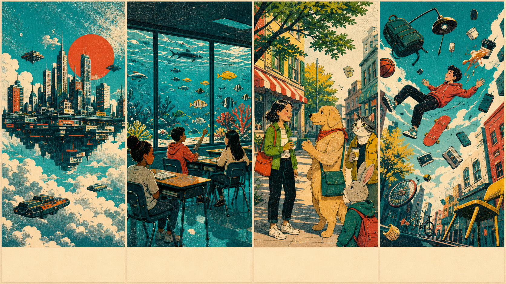
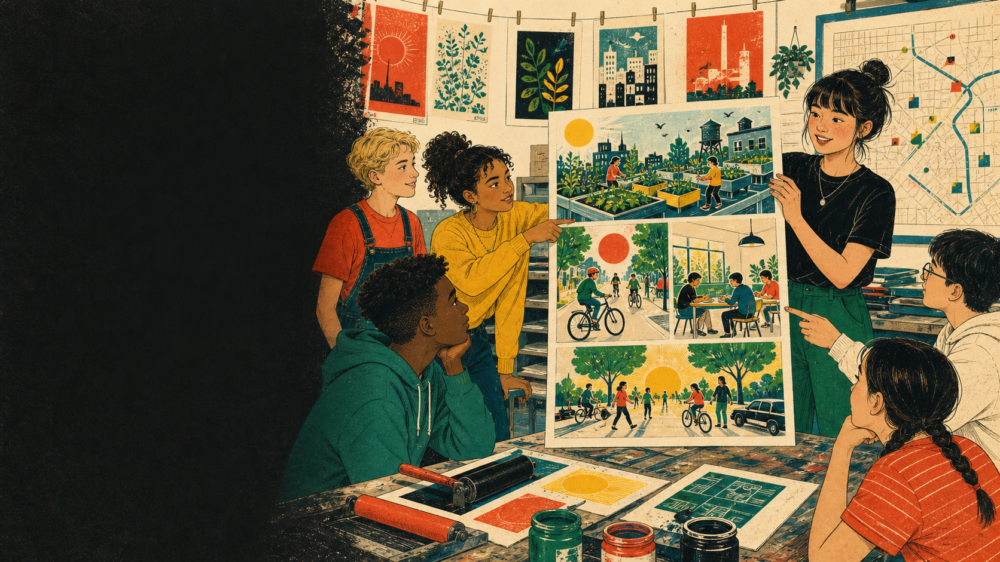
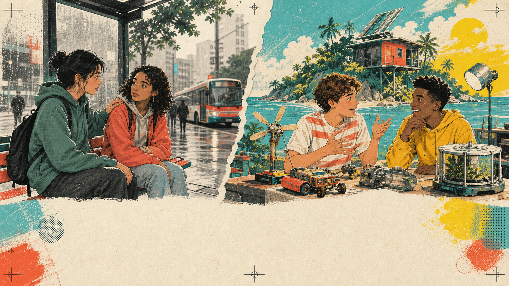
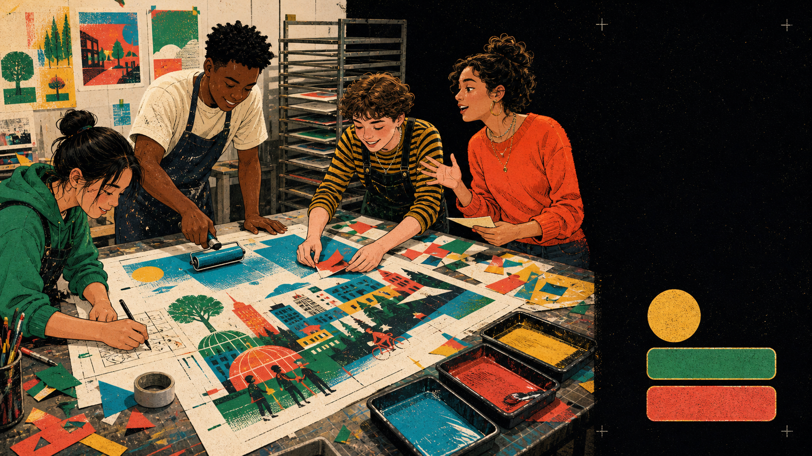

Tap both. What changes in the speaker's certainty?
Visual hook
Which world would change daily life most?

Tap one world. Predict one consequence.
Lesson route
Four stations. One alternate world.
1. Collect ink
Vocabulary for imagining and changing.
2. Build the plate
Meaning, form and pronunciation.
3. Read the proof
Listen and read for evidence.
4. Print the world
Pitch a better imagined reality.
Vocabulary
Four verbs power the press.
Open all four printing plates. 0 / 4
Vocabulary practice
Connect each action to its best purpose.
Tap one verb and one purpose.
Grammar discovery
An unreal idea enters. A result comes out.
IF
Which side uses a past form? Which side uses would?
Meaning
How close is the idea to reality?
Choose a sentence, then place it on the reality meter.
Form
Three ink plates make one sentence.
IF
If + subject + past simple
COMMA
Separate the two clauses when IF comes first.
RESULT
subject + would + base verb
If I had more time, I would learn animation.
The past form shows distance from reality, not past time.
Word order
Feed the pieces into the press.
Tap the pieces in order.
Form lab
One pattern. Three print settings.
If I had a robot, it would help with chores.
would + base verb
If I had a robot, it would not do my homework.
wouldn't + base verb
What would you do if you had a robot?
question word + would + subject + base verb
Tap every tab, then make one new example.
Special form
If I were you, I would...
If I were you, I would ask for help.
Choose the accurate advice print.
Controlled practice
Keep the ink. Reject the grammar smudges.
Tap every accurate second conditional sentence.
Error repair
Find the smudge. Print the repair.
Repairs revealed: 0 / 4
Pronunciation
Let would connect, not disappear.
Tap, listen, and echo the connected rhythm.

Pre-listening
Which changes will Lina print?
Choose two predictions. Then listen for evidence.
First + second listen
A town can begin as an idea.
First listen: What is Lina's main goal?
Second listen: Which four changes does she describe?
If every apartment had a rooftop garden, families would grow fresh food. If the town built safer bicycle streets, more teenagers would ride to school. If the library opened quiet study rooms, students would have a calm place to work. If we had one no-car afternoon each week, the town center would become a place for walking, music and games.
Listening comprehension
Which details survived the print run?
Tap the four details Lina actually mentions.
Reading
What if school changed one switch?
The One-Switch School
Our class designed one imaginary switch. If teachers pressed it, every room would change for one lesson. If students needed quiet, the room would become a calm library. If a class studied space, the ceiling would show the night sky. If students learned languages, the walls would connect them to another classroom.
The switch would not solve every problem. If people used it without a clear goal, lessons would become confusing. Our rule is simple: every remix must help students learn together.
Proof copy
One switch
quiet room
night sky
global classroom
Skim first: Is the writer fully positive, fully negative, or balanced?
Reading detail
Find the proof before you tap.
Tap four statements supported by the article.
Language use
Same grammar. Two conversation jobs.

Tap a side. Explain what the speakers are doing.
Pair speaking
Pull a ticket. Ask. Follow up.
Travel
Where would you go if distance disappeared?
School
What would you change if you were principal?
Technology
What would you invent if you had a lab?
Community
How would you help if you had one superpower?
Answer, ask Why?, then report your partner's most interesting remix.

Final production
Print a better world.
04:00
Include: one problem, three second conditional changes, one reason and one audience question.
Review quiz
Can your grammar hold registration?
1. If I ___ invisible...
2. ...I would ___ museums.
3. Correct advice?
4. Imagined or real?
INK SCORE
0 / 4
Homework + exit
Keep one remix. Print one next step.
Homework
Write 90-120 words: If I could redesign one thing... Use five second conditional sentences.
Optional
Record a 45-second alternate-world pitch or draw a three-panel poster.
Choose the statements that are true for you. Then share one final sentence.